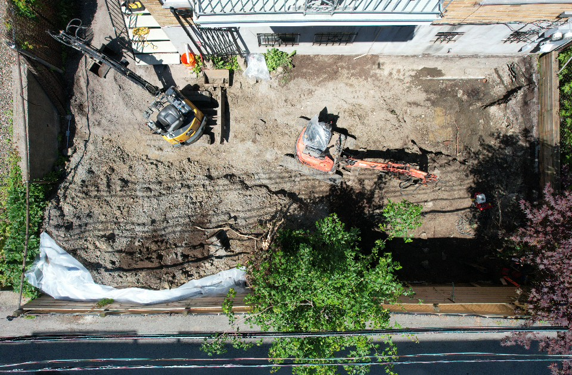
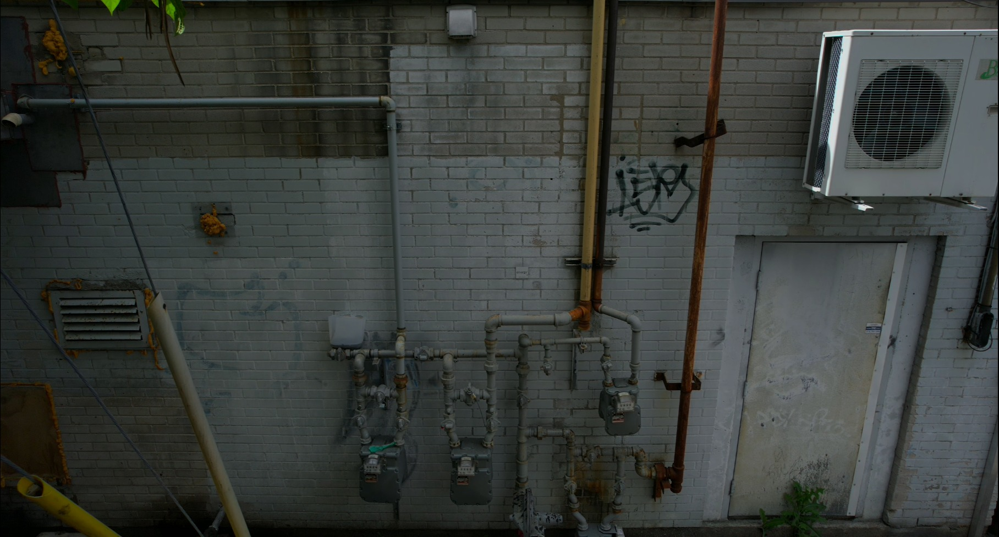
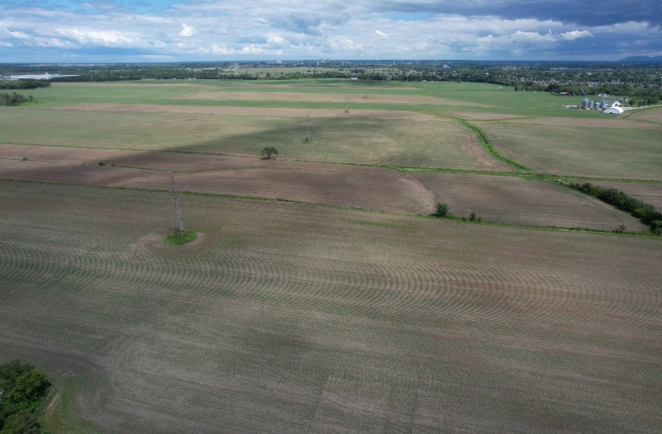

Progression de chantier commercial
Documentation visuelle d’un chantier pour montrer l’évolution des travaux, l’organisation du site, les accès et l’avancement global aux parties prenantes. Voir le service de suivi de chantier.
Portfolio
Des exemples de captations aériennes pour l’immobilier, la construction, l’industriel et le suivi de chantier. Chaque projet présente un type de mandat que Vision Altitude peut adapter aux besoins des entreprises du Grand Montréal, de Montréal et de la Rive-Nord.

Documentation visuelle d’un chantier pour montrer l’évolution des travaux, l’organisation du site, les accès et l’avancement global aux parties prenantes. Voir le service de suivi de chantier.
Images aériennes conçues pour présenter l’emplacement, les accès, l’architecture et l’environnement d’un bâtiment dans un contexte de promotion, de documentation ou de mise en marché. Voir les bâtiments commerciaux.

Captation aérienne permettant d’observer les façades, toitures, structures et autres zones difficiles d’accès afin de documenter l’état des lieux sans interrompre les opérations. Voir l’inspection visuelle aérienne.

Votre besoin ne correspond pas exactement aux exemples? Aucun problème. Chaque projet est unique et nous adaptons nos captations aériennes à vos objectifs, qu’il s’agisse d’un chantier, d’un bâtiment, d’une installation industrielle ou d’un mandat sur mesure.
Obtenir une soumissionMandats réels
Découvrez quelques mandats réalisés par Vision Altitude et la façon dont la captation aérienne peut servir à documenter un bâtiment, suivre l’évolution d’un chantier et fournir des images claires à différents moments d’un projet.
Parlez-nous du site, du secteur et des images souhaitées.